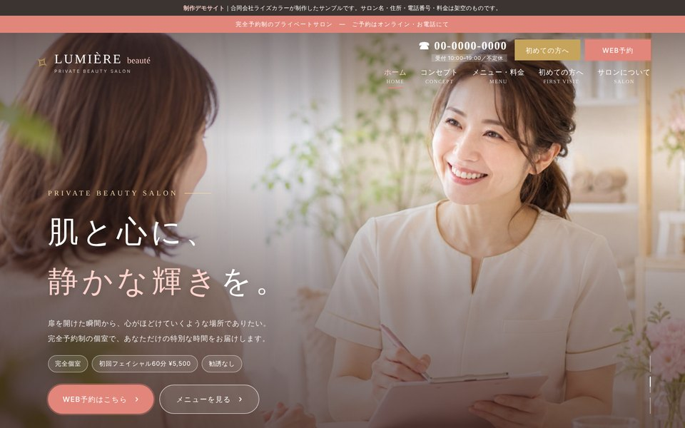
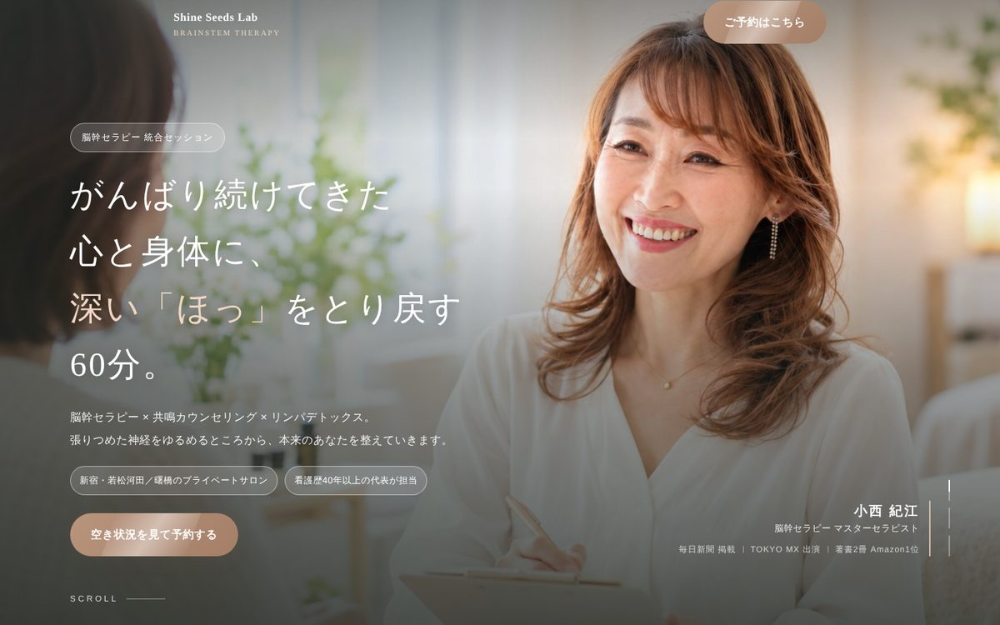
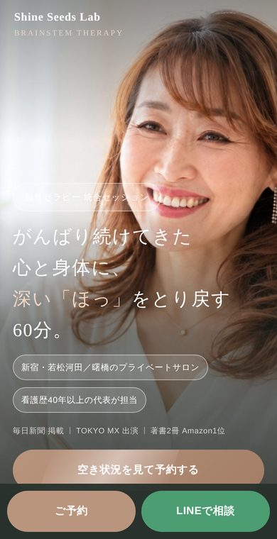

「誰に、何を伝えるか」を整理するところから始めて、予約の受付や顧客管理まで、オーナー様が手を動かさなくても進む形にしていきます。必要なサービスだけを選んでご相談いただけます。
ホームページ制作
あなたのお店や活動の「顔」になる、複数ページのホームページを制作します。お客様が知りたい順番に情報を並べて、最後にお問い合わせへ自然につながる構成にします。

- トップ・サービス・料金・会社概要・お問い合わせなど
- スマートフォン対応
- お問い合わせフォームの設置
- サーバー代・ドメイン代 月々0円で公開※
LP制作
ひとつのメニューやサービスに絞って、お申し込みやご予約につなげる1ページを作ります。広告やSNSからの受け皿にもぴったりです。

- お客様のお悩みから始まる構成
- 申し込みボタンの配置設計
- スマートフォンでの固定ボタン
- キャンペーンページにも対応
予約・顧客管理の仕組み化
ホームページやLPに、予約の受付から顧客管理までの仕組みを組み込みます。予約が入ったらオーナー様にお知らせが届いて、お客様には確認メールとリマインドメールが自動で送られて、申し込みの内容はスプレッドシートの台帳にたまっていきます。裏側ではプログラムを組んで動かしていて、ひとつずつ動作を確かめてからお渡しするので、ご自身で同じものを作るのはなかなか難しい部分まで、まとめてお任せいただけます。


- Googleカレンダーと連携した予約ページ
- 予約のお知らせメール(オーナー様あて)
- 確認メール・前日のリマインドメール(お客様あて)
- スプレッドシートの顧客台帳に自動で記録
- 予約前のアンケート(ご要望やお悩みの事前確認)
- お使いのGoogleアカウントで動くので、ツールの月額費用は0円※
実際に動いている例：一般社団法人 Shine Seeds Lab 様 脳幹セラピーLP
文章作成・ブログ運用
ホームページに載せる文章はもちろん、ブログ記事の作成や更新もお任せいただけます。ブログで施工事例やお役立ち情報を発信していくと、検索から見つけてもらえる入り口が増えていきます。
- ヒアリングから原稿を作成
- ブログページの追加と記事の執筆・更新
- チラシやSNSの文章作成
- 記事の執筆は都度ご相談
保守・修正サポート
ご希望の方には、公開したあとも、月1回の点検とレポートで見守ります。予約やメールの仕組みが正しく動いているかの確認に加えて、何人が訪れて、どのページがよく見られたかもレポートでお伝えします。営業時間の変更や写真の差し替えなど、ちょっとした修正もお任せください。
- 月1回の点検とレポート
- 修正対応 月3回まで
- 表示・予約・メールの動作確認
- アクセス解析レポート(毎月)
- 1年ごとの契約更新
※「0円」は、サーバー代・ドメイン代、ツールの月額費用についてです。月1回の保守点検・レポート(ご希望の方)は、別途費用がかかります。
ページの裏側で、
こんなふうに回ります。
お客様がページを見つけてから、予約、確認メール、台帳への記録、前日のご案内まで。予約後の連絡や記録が自動で進むように、ひとつにつなぎます。
お客様がすること
見つけて、読んで、納得
検索やSNS、名刺のQRコードからページへ。あなたの想いを聞き取った文章で、不安に先回りして答えます。
24時間いつでも予約
Googleカレンダーと連携した予約ページで、空いている日時だけを選べます。夜中や休みの日も受け付けます。
予約後に自動で進むこと
すぐにお知らせ
オーナー様には予約のお知らせメール、お客様には確認メールが、その場で自動で届きます。
台帳に記録
お名前、連絡先、ご希望、アンケートの回答まで、スプレッドシートの顧客台帳にたまっていきます。
前日にリマインド
予約の前日に、お客様へリマインドメールを送ります。うっかり忘れや、当日のキャンセルを減らします。
お客様の情報が、
ひとつの台帳にまとまる。
フォームから入った予約や問い合わせを、ひとつの台帳に自動で記録します。「あの方、いつ来てくれたっけ」と思ったときも、お名前や予約日からすぐに確認できます。
※お使いのGoogleアカウントで管理できるので、新しい管理ツールの月額費用はかかりません。
| 受付日時 | お名前 | ご希望 | 予約日 | 状況 |
|---|---|---|---|---|
| 11/02 22:14 | 山田 様 | 初回体験 | 11/05 | 確認済み |
| 11/03 06:48 | 佐藤 様 | お見積もり | 11/06 | 確認済み |
| 11/03 13:20 | 鈴木 様 | 2回目 | 11/08 | 前日通知 |
| 11/04 21:57 | 高橋 様 | 初回体験 | 11/09 | 新着 |
表示例です。台帳の項目は、お仕事に合わせて決めます。
ライズカラーの強み
アパレル販売から電話営業、営業代行、ビジネスコンサルまで、ずっと「売る現場」と「売れる仕組みづくり」に関わってきました。
- 電話営業・営業の現場経験
- 20年以上
- 予約を自動で受け付ける仕組み
- 24時間
- サーバー代・ドメイン代
- 月0円※
※保守点検(ご希望の方)は別途費用がかかります。
ご依頼から公開まで。
初めての方にも分かりやすいように、ひとつずつ順番に進めます。
ヒアリング
目的やお客様像、今のお悩みをお聞きします。オンラインでも大丈夫です。
構成・お見積もり
必要なページと内容を整理して、進め方と費用をご案内します。
原稿・デザイン・仕組み
原稿を書いてデザインに落とし込み、予約や台帳の仕組みを組み立てます。
- 公開
動作確認・公開
スマホでの見え方と、予約からメール、台帳までの動きをひとつずつ確かめて公開します。
保守・改善
ご希望の方は、月1回の点検とレポートで、公開後も見守っていきます。
まずは、今のお悩みを聞かせてください。
まだ何も決まっていなくても大丈夫です。必要なことを一緒に整理していきます。
無料で相談するご相談・お見積もりは無料です。オンラインで全国からご相談いただけます。